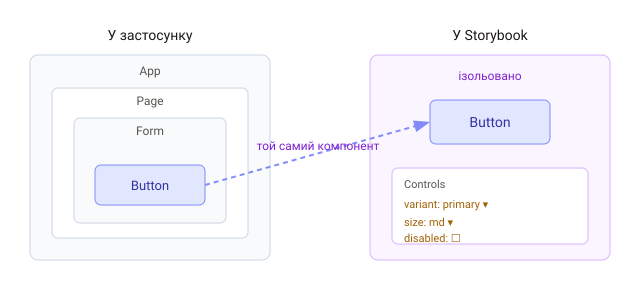

1. Що таке Storybook
Storybook — окреме середовище, де компоненти розробляють і показують ізольовано, поза застосунком. Кожен компонент можна побачити в усіх його станах, не клікаючи через півсайту, щоб до нього дістатися.

2. Яку проблему вирішує
Уяви кнопку в стані «завантаження» усередині форми, яка з'являється лише після логіну й трьох кліків. Перевіряти її вигляд у застосунку — болісно. Storybook показує компонент напряму й одразу в потрібному стані.
Ізольована розробка змінює порядок роботи: спершу доводиш компонент «до пуття» в Storybook (усі варіанти, крайні випадки, доступність), а вже потім вставляєш готовий у застосунок. Менше сюрпризів у реальному UI.
3. Що дає команді
- Каталог компонентів — жива документація дизайн-системи;
- Розробка без залежностей — не треба піднімати весь застосунок;
- Візуальні й a11y-перевірки — через аддони;
- Спільна мова з дизайнерами й тестувальниками.
4. Встановлення
Storybook додають однією командою в наявний проєкт — вона визначає збирач (Vite) і налаштовує все сама:
npx storybook@latest init
npm run storybook // відкриє UI на localhost:60065. Як це виглядає
Зліва — дерево компонентів та їхніх станів («історій»), у центрі — сам компонент, праворуч/знизу — панель Controls, де можна крутити пропси наживо. Далі навчимося писати ці історії.